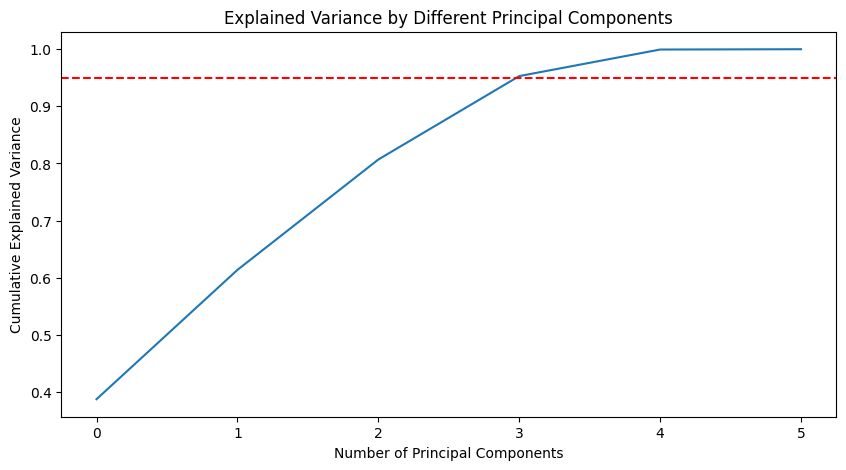
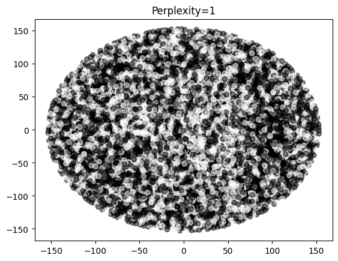
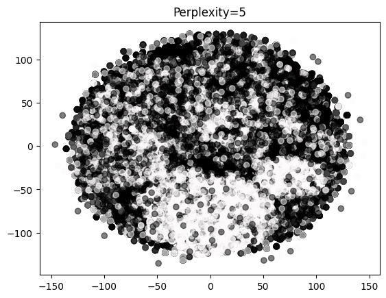

import pandas as pd
from sklearn.decomposition import PCA
from sklearn.preprocessing import StandardScaler
from sklearn.manifold import TSNE
import matplotlib.pyplot as plt
import seaborn as sns
import numpy as npdf = pd.read_csv('../Data/01-modified-data/cardiovascular_numeric_final.csv')
df = df.drop(df.columns[0], axis=1)
df.head()| id | age | gender | height | weight | ap_hi | ap_lo | cholesterol | gluc | smoke | alco | active | cardio | bmi | |
|---|---|---|---|---|---|---|---|---|---|---|---|---|---|---|
| 0 | 0 | 50 | 2 | 168 | 62 | 110 | 80 | 1 | 1 | 0 | 0 | 1 | 0 | 21.97 |
| 1 | 1 | 55 | 1 | 156 | 85 | 140 | 90 | 3 | 1 | 0 | 0 | 1 | 1 | 34.93 |
| 2 | 2 | 52 | 1 | 165 | 64 | 130 | 70 | 3 | 1 | 0 | 0 | 0 | 1 | 23.51 |
| 3 | 3 | 48 | 2 | 169 | 82 | 150 | 100 | 1 | 1 | 0 | 0 | 1 | 1 | 28.71 |
| 4 | 4 | 48 | 1 | 156 | 56 | 100 | 60 | 1 | 1 | 0 | 0 | 0 | 0 | 23.01 |
numerical_cols = ["age", "height", "weight", "ap_hi", "ap_lo", "bmi"]
X = df[numerical_cols]
Y = df['cardio']
print(X) age height weight ap_hi ap_lo bmi
0 50 168 62 110 80 21.97
1 55 156 85 140 90 34.93
2 52 165 64 130 70 23.51
3 48 169 82 150 100 28.71
4 48 156 56 100 60 23.01
... ... ... ... ... ... ...
64801 54 172 70 130 90 23.66
64802 58 165 80 150 80 29.38
64803 53 168 76 120 80 26.93
64804 61 163 72 135 80 27.10
64805 56 170 72 120 80 24.91
[64806 rows x 6 columns]# Standardizing the features
scaler = StandardScaler()
df_std = scaler.fit_transform(X)# Applying PCA to the data
pca = PCA()
pca.fit(df_std)PCA()In a Jupyter environment, please rerun this cell to show the HTML representation or trust the notebook.
On GitHub, the HTML representation is unable to render, please try loading this page with nbviewer.org.
PCA()
# Determine the optimal number of principal components to retain
# You can use a scree plot and look for the "elbow" or use the explained variance ratio
plt.figure(figsize=(10, 5))
plt.plot(np.cumsum(pca.explained_variance_ratio_))
plt.xlabel('Number of Principal Components')
plt.ylabel('Cumulative Explained Variance')
plt.axhline(y=0.95, color='r', linestyle='--') # for 95% variance
plt.title('Explained Variance by Different Principal Components')
plt.show()
# Choose the number of components such that at least 95% variance is retained
optimal_components = np.argmax(np.cumsum(pca.explained_variance_ratio_) >= 0.95) + 1
# Reduce the data dimensions
pca_opt = PCA(n_components=optimal_components)
df_reduced = pca_opt.fit_transform(df_std)1st & 2nd
# Visualize the reduced-dimensional data using PCA
plt.figure(figsize=(10, 5))
sns.scatterplot(x=df_reduced[:, 0], y=df_reduced[:, 1], hue=Y,color='cyan')
plt.xlabel('First Principal Component')
plt.ylabel('Second Principal Component')
plt.title('PCA - Reduced Dimensionality Data Visualization')
plt.show()
2nd & 3
# Visualize the reduced-dimensional data using PCA
plt.figure(figsize=(10, 5))
sns.scatterplot(x=df_reduced[:, 1], y=df_reduced[:, 2], hue=Y,color='cyan')
plt.xlabel('Second Principal Component')
plt.ylabel('Third Principal Component')
plt.title('PCA - Reduced Dimensionality Data Visualization')
plt.show()3rd & 4th
# Visualize the reduced-dimensional data using PCA
plt.figure(figsize=(10, 5))
sns.scatterplot(x=df_reduced[:, 2], y=df_reduced[:, 3], hue=Y,color='cyan')
plt.xlabel('Third Principal Component')
plt.ylabel('Fourth Principal Component')
plt.title('PCA - Reduced Dimensionality Data Visualization')
plt.show()plt.figure(figsize=(10, 5))
sns.scatterplot(x=df_reduced[:, 0], y=df_reduced[:, 2], hue=Y,color='cyan')
plt.xlabel('First Principal Component')
plt.ylabel('Third Principal Component')
plt.title('PCA - Reduced Dimensionality Data Visualization')
plt.show()
# Analyze and interpret the results (This is just a placeholder for the analysis)
# Example: Print the explained variance by each component
for i, variance in enumerate(pca_opt.explained_variance_ratio_):
print(f"Principal Component {i+1}: {variance:.2%} of the variance")
# Print the optimal number of components
print(f"Optimal number of components: {optimal_components}")Principal Component 1: 38.71% of the variance
Principal Component 2: 22.64% of the variance
Principal Component 3: 19.33% of the variance
Principal Component 4: 14.61% of the variance
Optimal number of components: 4T-SNE
for i in (1,5,10,30,50):
X_embedded = TSNE(n_components=2, learning_rate='auto',init='random', perplexity=i).fit_transform(df_std)
plt.scatter(X_embedded[:,0],X_embedded[:,1],c=Y, alpha=0.5,cmap='gist_earth')
plt.title(f"Perplexity={i}")
plt.show()
